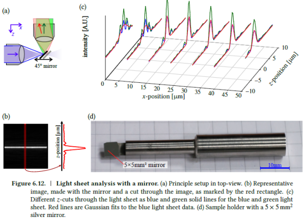
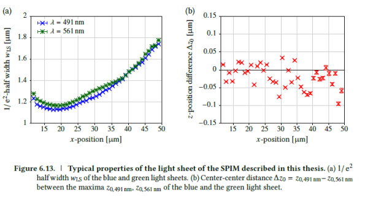
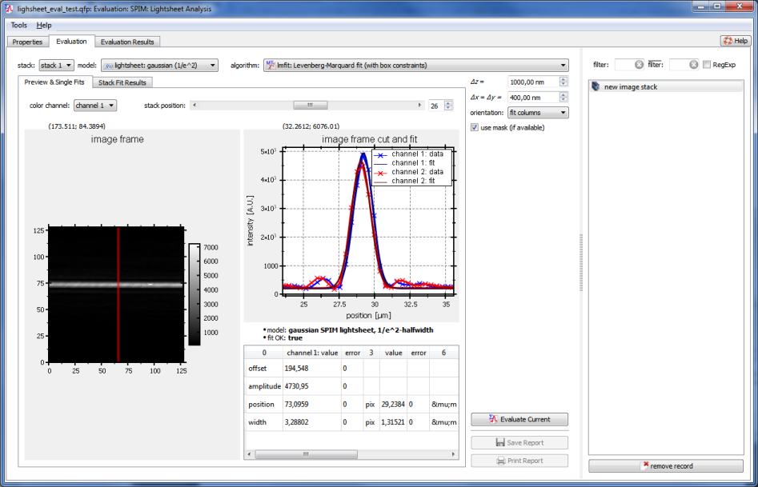
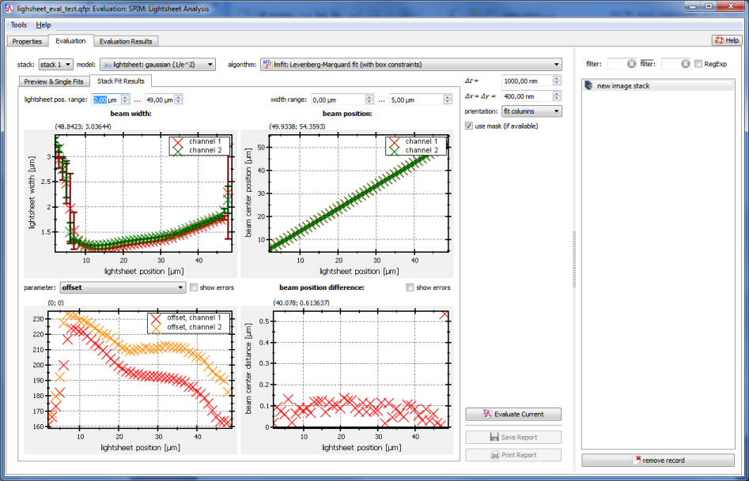

$$qf_commondoc_header.start$$ $$qf_commondoc_header.end$$
Description

This plugin performs an analysis for a set of lightsheet x-scans with a 45° mirror. I.e. it expects image stacks where each frame contains an image of the lightsheet. Usually a 45° mirror is inserted into the SPIM microscope to directly reflect the lightsheet onto the camera. Then the mirror is moved by a distance Δz and another image is taken. It is also possible to evaluate an image stack with several color channels. Then the plugin allows to compare the parameters of each of the color channels.
The plugin fits a model function (usually a gaussian or a slit function) to each row (or column) of each frame. The fit results are averaged for each frame. The resultant mean and standard deviation is then displayed versus the position of the mirror.
$$startbox_info$$
A detailed description of the methods, implemented in this plugin can also be found in these references:
- $$jankrieger_phdthesis$$
- $$PLAIN_SPIMFCCS$$ (see supplementary info therein)
- $$PLAIN_SPIMFS_CAM$$ (see supplementary info therein)
$$endbox$$

$$see:There is a tutorial, which explains the usage of this plugin in detail!$$
User Interface


- After loading an image stack and inserting a SPIM Lightsheet Analysis evaluation, open the evaluation and select the lightsheet

- Now select a fit model and a fit algorithm to use.As an algoruthm, you can use $$fitalgorithm:name:fit_lmfit$$ in most cases, which is reasonably fast and has good convergence properties. You can use one of the following fit models: $$list:fitfunc:lightsheet_$$They differ in the assumes shape for the ligh-sheet and in how the width is defined (e.g. as 1/e²-width or FWHM in a Gaussian)
- You can also configure how the fit works:
- scale fit intensit: scales the image intensity to a value, comparable to the image size ($(I\rightarrow I\cdot\frac{\mbox{width}}{\max(I)})$). This improves the fit result in some cases.
- use fit function initial values estimation: Fit functions in QuickFit contain code, that allows to estimate "good" starting values for the fit. This often improves convergence. If this option is not activated, a default estimateion algorithm is used, which assumes, that the fit model has parameters "OFFSET", "AMPLTUDE", "WIDTH", "POSITION", as a Gaussian function (see e.g. $$fitfunction:name:lightsheet_gaussian$$)
- Enter the shift of the mirror in nanometers as Δz and the pixel size as Δx.
- select whether to fit to rows (vertical lightsheet) or to columns (horizontal lightsheet)
- click on "Fit Current" to perform all fits for the current file.
- In the tab "Preview & Single Fits" you will see some intermediate fit results and may (after the fit completed) explore the fit to each row/column in each frame and color channel.
- The second tab "Stack Fit Results" summarizes all fit results.
$$see:There is a tutorial, which explains the usage of this plugin in detail!$$